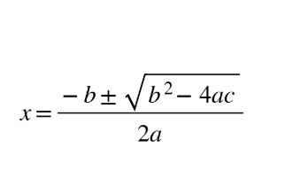
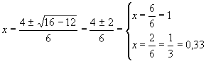

¿Que son las ecuaciones?
Las ecuaciones son igualdades algebraicas que guardan una relación entre cantidades cuyos valores son desconocidos y sirven para resolver problemas. Sin embargo, no todas las igualdades algebraicas son ecuaciones. Una ecuación expresa, mediante una igualdad algebraica, una relación entre cantidades cuyo valor, de momento, no conocemos.
Ecuacion de primer grado
La ecuación de primer grado es la forma de relacionar elementos conocidos y desconocidos en matemática. La forma de representar la ecuación de primer grado es:
ax + b = 0
Donde a y b son números reales diferentes de cero y x representa el elemento desconocido. Se llama de primer grado porque el valor desconocido no se multiplica por sí mismo, es decir, tiene exponente 1.
El valor desconocido también se llama incógnita. Las ecuaciones de primer grado pueden presentar una o más incógnitas, como en el siguiente caso:
ax - by = c
Para las incógnitas se usan, por lo general, las letras x, y , z.
Ejemplos de ecuaciones de primer grado son:
2x = 4
9x + 3y = 2
5 = 20x - 5
¿Como resolver una ecuacion?
Para resolver una ecuación de primer grado, debemos descubrir el valor desconocido, es decir, encontrar el valor de la incógnita que hace que la igualdad sea verdadera. Esto lo hacemos despejando la incógnita.
Despejar la incógnita no es otra cosa que dejar sola la incógnita de un lado de la igualdad, y del otro lado los elementos conocidos. Para esto, cambiamos los elementos para un lado u otro de la igualdad, siempre teniendo el cuidado de mantener la igualdad verdadera.
Cuando un elemento o término de la ecuación cambia al lado contrario del signo igual (=), debemos invertir la operación. Así, si estaba multiplicando, pasará a dividir; si estaba sumando, pasará a restar, y viceversa.
Por ejemplo, dada la siguiente ecuación:
8x - 3 = 5
¿Cuál es el valor de la incógnita x que hace la igualdad 8x - 3 = 5 verdadera?
Despejamos x pasando el 3, que está restando, al otro lado, donde pasará a sumar:
8x = 5 + 3 ⇒ 8x = 8
Ahora, pasamos el 8, que está multiplicando a la x, al otro lado, donde pasará a dividir:
x = 8/8 ⇒ x = 1
Revisamos si en realidad x=1 hace que la ecuación sea verdadera:
8(1) - 3 = 5 ⇒ 8 - 3 = 5 ⇒ 5 = 5
Ecuaciones de segundo grado
Son ecuaciones de segundo grado aquellas en las que la incógnita aparece al menos una vez elevada al cuadrado (x2 ).
Por ejemplo: 3x2 - 3x = x - 1.
Pasemos al primer miembro de la ecuación todos los términos de forma que en el segundo miembro quede 0. Obtenemos:
3x2 - 4x + 1 = 0, que es la forma en que deberemos expresar todas la ecuaciones de segundo grado para resolverlas.
En muchos casos, una vez conseguida esta forma, la ecuación se puede simplificar, lo cual es muy conveniente. Por ejemplo:
Expresar en la forma más simple y simplificada posible, la ecuación:
3x2 - 3x/2 = x/2 - x + 2 + x2
Primero haremos denominador común para eliminar los denominadores existentes. Llegaremos a:
6x2 - 3x = x - 2x + 4 + 2x2
Expresando todos los términos en el primer miembro: 4x2 - 2x - 4 = 0
Y simplificando (dividiendo todo por 2): : 2x2 - x - 2 = 0.
Como se vio anteriormente, cualquier ecuación de segundo grado se puede expresar de la forma:
ax2 +bx + c = 0
Donde a, b y c serán números enteros (positivos o negativos). Para ello bastará obtener el denominador común (si hay denominadores), para eliminarlo y pasar todos los términos al primer miembro.
Sabemos que una vez conseguida dicha forma, las dos "posibles" soluciones de la ecuación son:

Así la ecuación del ejemplo inicial: 3x2 - 4x + 1 = 0: tendrá por soluciones

Luego 1 y 0,33 son las dos soluciones o raíces de la ecuación.